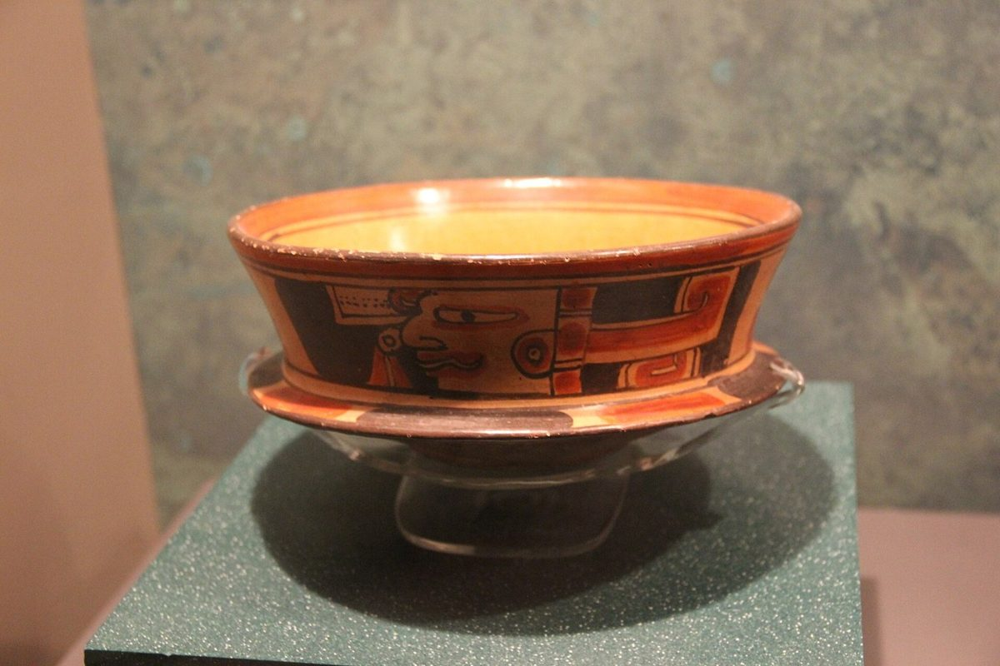

蓋(トップエンド)
缶の上をふさぐ丸い板。中央に、開けるための刻み線とつまみが付いています。
店のこと
店についての確認済みの情報は、所在地とInstagramだけです。このページでは、制作側のデザインの考え方をご紹介します。
制作側の連想
缶の上をふさぐ丸い板。中央に、開けるための刻み線とつまみが付いています。
指を掛けて引き起こす、小さな金属のつまみ。蓋の中央近くにリベットで留めます。
蓋の表面に浅く入れた刻み線。ここから先が裂けて、口が開きます。
円筒状の側面。ラベルや印刷がのるのも、この部分です。
蓋と胴のふちを折り重ねてかしめた、細い輪の部分。
缶の下をふさぐ丸い板。同心円状の凹凸で強度を出します。
缶詰というモチーフは制作側の連想で、お店の理念・由来とは無関係です。
ギャラリー(イメージ)


壁や板、布などの質感のイメージ写真です。お店のものではありません。
ギャラリー(イメージ)



器や食材のイメージ写真です。お店のものではなく、提供内容を示すものでもありません。